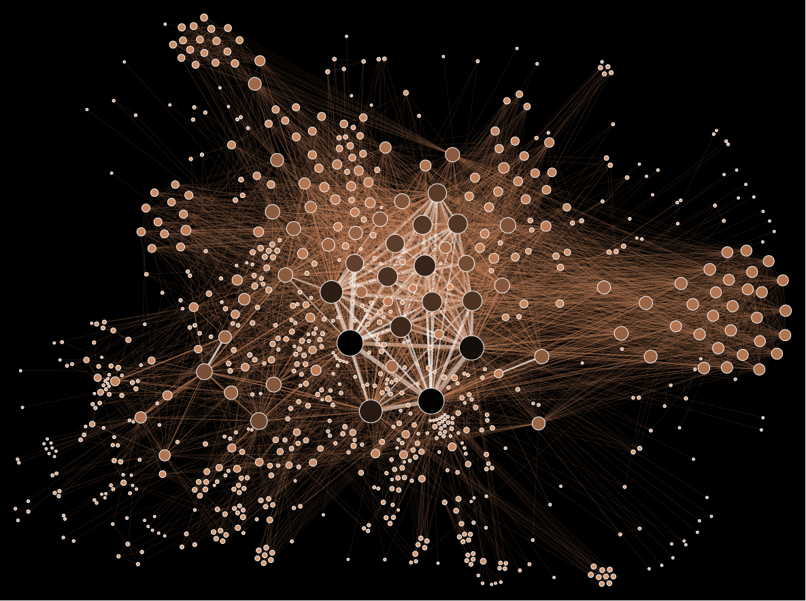

Metadata

"We kill people based on metadata"
Michael Hayden
former CIA and NSA director
Cryptographic Algorithms
Authenticated Encryption:
XSalsa20/Poly1305
Hash and MAC:
BLAKE2s → BLAKE2b
Signatures:
ECDSA w/ brainpoolP256r1 → Ed25519
Key Agreement:
ECDHC w/ brainpoolP256r1 → Curve25519
briarproject.org